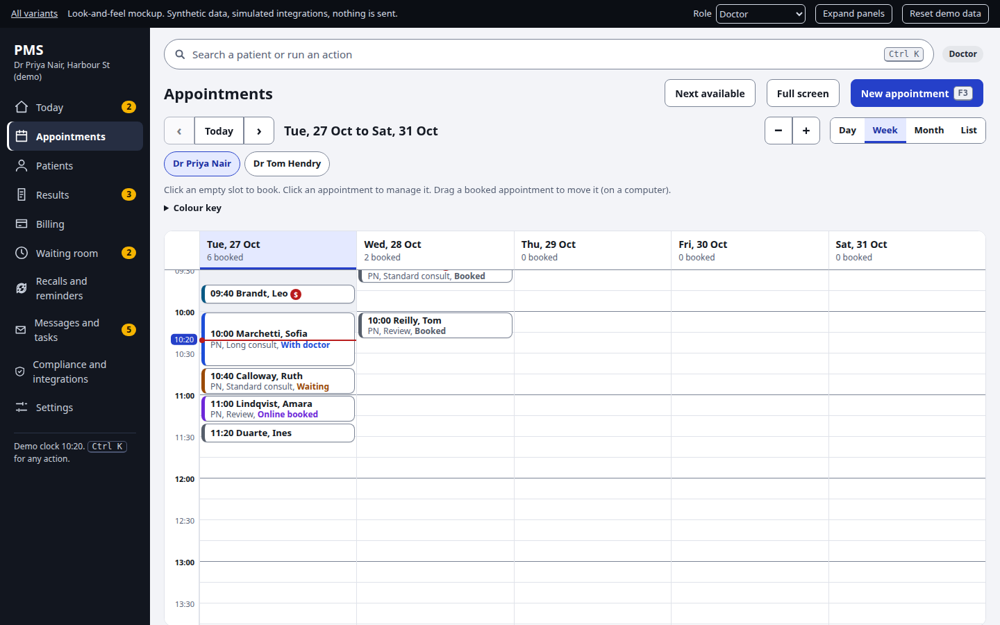
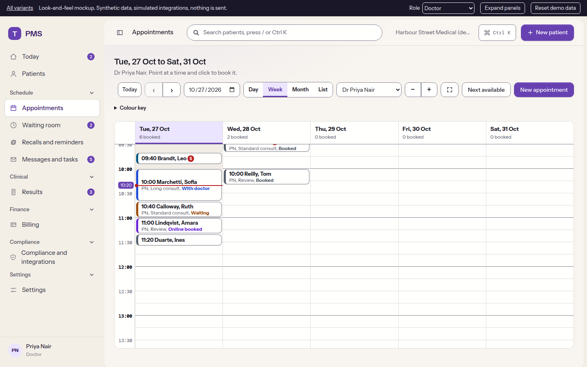
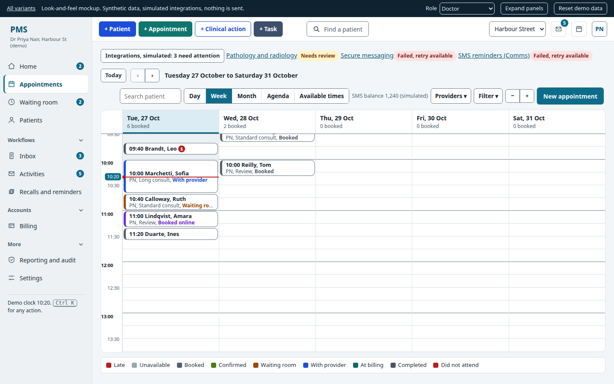
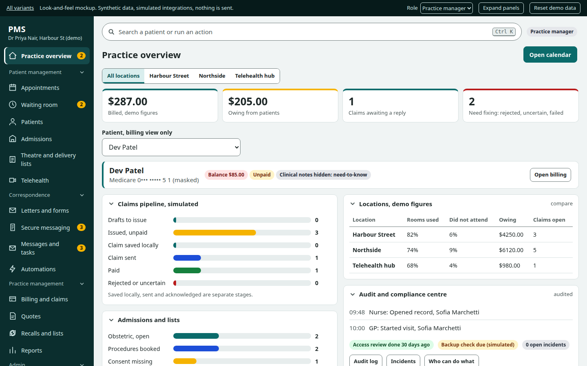

Compared with Best PracticeGP at speed
The appointment book is home. Keyboard shortcuts, right-click actions and a results inbox keep a busy front desk moving.
Open mockup (opens in a new tab)
Compared with HalaxyFriendly and online-first
A full-page calendar with slide-over booking, online requests, invoices, claims and patient reminders.
Open mockup (opens in a new tab)
Compared with MediRecordsClinical record, cloud and multi-site
Quick links, a patient record with seven tabs, structured clinical sections and a secure messaging inbox.
Open mockup (opens in a new tab)
Compared with XestroSpecialist practice manager
Admissions, theatre and delivery lists, quotes with gap, automations and reports by entity.
Open mockup (opens in a new tab)